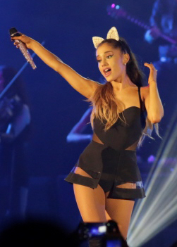

Life and career
1993–2008: Early life and career beginnings

1993–2008: Early life and career beginnings
Ariana Grande-Butera was born on June 26, 1993, in Boca Raton, Florida. She is the daughter of Joan Grande, the
Brooklyn-born CEO of Hose-McCann Communications, a manufacturer of communications and safety equipment, and
Edward
Butera, a graphic design firm owner in Boca Raton. Grande is of Italian descent, and she refers to herself as an
Italian American of "half Sicilian and half Abruzzese" descent. She has an older half-brother, Frankie Grande,
an
entertainer and producer, and she has a close relationship with her maternal grandmother, Marjorie Grande.
Grande's
family moved from New York to Florida when her mother was pregnant with her, and her parents separated when she
was
around 9 or 10 years old. As a child, Grande performed with the Fort Lauderdale Children's Theater, playing her
first role as the title character in their version of the musical Annie. She also performed in their musicals
The
Wizard of Oz and Beauty and the Beast.At the age of 8, she performed at a karaoke lounge on a cruise ship and
with
various orchestras such as South Florida's Philharmonic, Florida Sunshine Pops and Symphonic Orchestras, and she
made her first national television appearance singing "The Star-Spangled Banner" for the Florida Panthers.During
this time she attended Florida's Pine Crest School and later North Broward Preparatory School. By age 13, she
became
serious about pursuing a music career, though she still concentrated on theater. When she first arrived in Los
Angeles, California to meet with her managers, she expressed a desire to record an R&B album: "I was like, 'I
want
to make an R&B album,' They were like 'Um, that's a helluva goal! Who is going to buy a 14-year-old's R&B
album?!'"
In 2008, Grande was cast in the supporting role of cheerleader Charlotte in the musical 13 on Broadway, for
which
she won a National Youth Theatre Association Award. When she joined the musical, Grande left North Broward
Preparatory School, but continued to be enrolled; the school sent materials to her so she could study with
tutors.She also sang various times at the New York City jazz club Birdland.
2009–2012: Breakthrough on Nickelodeon
2009–2012: Breakthrough on Nickelodeon
Grande was cast in the Nickelodeon television show Victorious along with 13 co-star Elizabeth Gillies in 2009.
In
this sitcom, set in a performing arts high school, Grande played the "adorably dimwitted" Cat Valentine. She had
to
dye her hair red every other week for the role—which severely damaged her hair—because the executive producer,
Dan
Schneider, did not want all the cast members to be brunettes, and the red hair was also a feature that the
network
felt would fit the personality of Cat. The show premiered in March 2010 to the second largest audience for a
live-action series in Nickelodeon history with 5.7 million viewers.The role helped propel Grande to teen idol
status, but she was more interested in a music career, stating that acting is "fun, but music has always been
first
and foremost with me." Her character was compared to "Brittany Murphy's performance as the hapless Tai in
Clueless"
(1995) and described as being "very impressionable and easily swayed" but "generally sweet". The second season
premiered in April 2011 to 6.2 million viewers, becoming the highest rated episode of Victorious.In 2010, she
played
the role of Miriam in the musical Cuba Libre, written and produced by American songwriter Desmond Child. After
the
first season of Victorious wrapped, Grande wanted to focus on her music career and began working on her debut
album
in August 2010. To strengthen her vocal range, she began working with vocal coach Eric Vetro. She made her first
musical appearance on the track "Give It Up" on the soundtrack Victorious: Music from the Hit TV Show in August
2011. While filming Victorious, Grande made several recordings of herself singing covers of songs by Adele,
Whitney
Houston and Mariah Carey, and uploaded them to YouTube. A friend of Monte Lipman, CEO of Republic Records, came
across one of Grande's videos. Impressed by her vocals, he sent the links to Lipman, who signed her to a
recording
contract. She released her first single, "Put Your Hearts Up", in December 2011, which was recorded for a
potential
teen-oriented pop album that was never issued. She later disowned the track for its bubblegum pop sound, saying
that
she had no interest in recording music of that genre. The song was later certified Gold by the Recording
Industry
Association of America (RIAA). Also in 2011, Grande voiced the fairy Princess Diaspro in 13 episodes of the
Nickelodeon version of the Italian animated television series Winx Club, appeared in Greyson Chance's music
video
for the song "Unfriend You" from his album Hold On 'til the Night (2011), portraying Chance's ex-girlfriend, and
voiced the title role in the English dub of the Spanish-language animated film Snowflake, the White Gorilla. On
a
second soundtrack for Victorious, Victorious 2.0, released on June 5, 2012 as an extended play, Grande supplied
vocals as part of the show's cast for the song "5 Fingaz to the Face". After three seasons, Victorious was not
renewed. The finale aired in February 2013. The third and final Victorious soundtrack, Victorious 3.0, was
released
on November 6, 2012, featuring Grande duetting with Victoria Justice in the song "L.A. Boyz".[unreliable source]
A
music video of the song followed. In December 2012, Grande collaborated on the single version of "Popular Song",
a
duet with British singer and songwriter Mika. She also starred as Snow White in a pantomime-style musical
theatre
production called A Snow White Christmas, together with Charlene Tilton and Neil Patrick Harris at the Pasadena
Playhouse. Grande played Amanda Benson in Swindle, a 2013 Nickelodeon film adaptation of the children's book of
the
same name. Meanwhile, Nickelodeon created Sam & Cat, an iCarly and Victorious spin-off starring Jennette McCurdy
and
Grande. Grande and McCurdy reprised their respective roles as Cat Valentine and Sam Puckett on the buddy sitcom,
which paired the characters as roommates who form an after-school babysitting business. The pilot aired on June
8,
2013, and the show was immediately picked up by the network. The following month, Nickelodeon doubled Sam &
Cat's
original 20-episode order for season one, making it a 40-episode season. Despite its success in the ratings, the
series was canceled after 35 episodes. The final episode aired on July 17, 2014.
2013–2015: Yours Truly and My Everything

2013–2015: Yours Truly and My Everything
Grande recorded her first studio album Yours Truly, originally titled Daydreamin', over a three-year period. It
was
released on August 30, 2013 and debuted at number one on the US Billboard 200 albums chart, with 138,000 copies
sold
in its first week. Yours Truly also debuted in the top ten in several other countries, including Australia, the
UK,
Ireland, and the Netherlands. The lead single "The Way", featuring Pittsburgh rapper Mac Miller, debuted at
number
ten on the US Billboard Hot 100, eventually peaking at number nine for two weeks. Grande was later sued by
Minder
Music for copying the line "What we gotta do right here is go back, back in time" from the 1972 song "Troglodyte
(Cave Man)" by The Jimmy Castor Bunch. The album's second single, "Baby I", was released in July. Its third
single,
"Right There", featuring Detroit rapper Big Sean, was released in August. They respectively peaked at number 21
and
84 on the Billboard Hot 100.[61] Grande performing on The Honeymoon Tour in 2015. Grande recorded the duet
"Almost
Is Never Enough" with Nathan Sykes of The Wanted, which was released as promotional single in August 2013. She
also
joined Justin Bieber on his Believe Tour for three shows and kicked off her own headlining mini-tour, The
Listening
Sessions. The following month, Billboard magazine ranked Grande at number four on their list of "Music's Hottest
Minors 2013", an annual ranking of the most popular musicians under the age of 21. At the 2013 American Music
Awards, she won the award for New Artist of the Year. She released a four-song Christmas EP, Christmas Kisses in
December 2013. Grande received the Breakthrough Artist of the Year award from the Music Business Association,
recognizing her achievements throughout 2013. By January 2014, Grande had begun recording her second studio
album,
with singer-songwriter Ryan Tedder and record producers Benny Blanco and Max Martin. The same month, she earned
the
Favorite Breakout Artist award at the People's Choice Awards 2014. In March 2014, Grande sang at the White House
concert, "Women of Soul: In Performance at the White House". The following month, President Barack Obama and
First
Lady Michelle Obama invited Grande again to perform at the White House for the Easter Egg Roll event.
2016–2017: Dangerous Woman
2016–2017: Dangerous Woman
Grande began recording songs for her third studio album, Dangerous Woman, originally titled Moonlight, in 2015.
In
October of that year, she released the single "Focus", initially intended as the lead single from the album; the
song debuted at number seven on the Billboard Hot 100. Grande made a cameo appearance in the comedy film
Zoolander 2
starring Ben Stiller and Owen Wilson. In March 2016, Grande released "Dangerous Woman" as the lead single from
the
retitled album of the same name. The single debuted at number ten on the Billboard Hot 100, becoming the first
artist to have the lead single from each of her first three albums debut in the top ten.The same month, Grande
appeared as host and musical guest of Saturday Night Live, where she performed "Dangerous Woman" and debuted the
promotional single "Be Alright",which charted at number 43 on the Billboard Hot 100.Grande garnered positive
reviews
for her appearance on the show, including praise for her impressions of various singers, some of which she had
done
on The Tonight Show. Grande won an online voting poll on Entertainment Weekly as the "best host of the season".
In
May 2016, Grande appeared on The Voice season 10 finale, performing the second single from the album, "Into
You",
which peaked at number 13 in the United States, and duetted with Christina Aguilera on "Dangerous Woman".Grande
released Dangerous Woman on May 20, 2016, and debuted at number two on the Billboard 200. It also debuted at
number two in Japan, and at number one in several other markets, including Australia, the Netherlands,
Ireland, Italy, New Zealand and UK. Mark Savage, writing for BBC News, called the album "a mature,
confident record".At the Summertime Ball at London's Wembley Stadium in June, Grande performed three songs
from the album as part of her set. In August, Grande released a third single from the album, "Side to Side",
featuring rapper Nicki Minaj, her eighth top ten entry on the Hot 100, which peaked at number four on that
chart. Dangerous Woman was nominated for Grammy Award for Best Pop Vocal Album and the title track for Best
Pop Solo Performance.
2018–present: Sweetener and Thank U, Next
2018–present: Sweetener and Thank U, Next
Grande began working on songs for her fourth studio album, Sweetener, with Pharrell Williams in 2016, but "the
events in Manchester gave a hard reset to the project's expectations". Grande released "No Tears Left to Cry" as
the
lead single from Sweetener in April 2018, with the song debuting at number three on the Billboard Hot 100,
making
Grande the only artist to have debuted the first single from each of her first four albums in the top ten of the
Hot
100.The second single, "God Is a Woman", peaked at number 8 on the Hot 100 and became Grande's tenth top ten
single
in the US. Released in August 2018,Sweetener debuted at number one on the Billboard 200 and received acclaim
from
critics. The album also gained Grande her first Grammy Award, for Best Pop Vocal Album, at the 61st Annual
Grammy
Awards. Grande gave four concerts to promote the album, billed as The Sweetener Sessions, at New York City's
Irving
Plaza, The Vic Theatre in Chicago, Ace Theater in Los Angeles, and KOKO in London between August 20 and
September 4,
2018. In October 2018, Grande participated in the NBC broadcast, A Very Wicked Halloween, singing "The Wizard
and I"
from the musical Wicked. The following month, the BBC aired a one-hour special, Ariana Grande at the BBC,
featuring
interviews and performances.Grande's second single from Thank U, Next, "7 Rings", was released on January 18,
2019, and debuted at number one on the Billboard Hot 100 for the week of February 2, becoming her second single in
a row (and overall) to top the charts. It made Grande the third female artist with multiple number-one debuts
after Mariah Carey (3) and Britney Spears (2) and fifth artist overall after Justin Bieber and Drake. The
song broke several streaming and recording industry records.[190] Spending eight non-consecutive weeks at number
one, it became Grande's most successful song on the chart[191] and one of the best selling singles worldwide.
Thank U, Next was released on February 8, 2019, and debuted at number one on the Billboard 200 while receiving
acclaim from critics. It broke the records for the largest streaming week for a pop album and for a female
album in the United States with 307 million on-demand streams